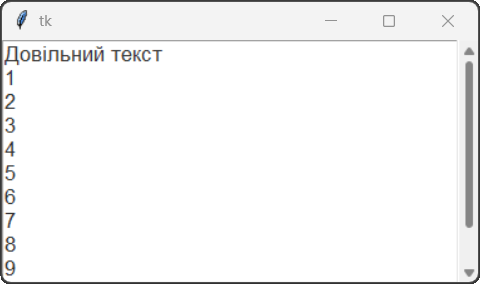
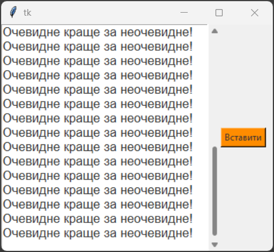

Віджет Text – клас багаторядного текстового поля. Цей віджет призначений для введення та редагування великої кількості текстових даних.
Загальний синтаксис:
name = Text(window, options)
де, name – ім'я поля вводу, window – ім'я вікна, на якому розташовується поле, options – параметри поля.
Властивості Text:
| Властивість | Значення |
|---|---|
| wrap | Стиль переносу тексту. Може мати значення: "none", "char", "word". За замовчуванням дорівнює "char", що означає, що текст буде переноситися по символу. Якщо встановити "word", то текст буде переноситися по слову, а якщо "none", то текст не буде переноситися і буде продовжуватися в одну лінію. |
| width | Ширина поля вводу в пікселях. За замовчуванням дорівнює 20 символів. |
| background (bg) | Колір фону поля. |
| foreground (fg) | Колір тексту в полі вводу. |
| borderwidth (bd) | Ширина рамки навколо поля вводу в пікселях. |
| state | Стан поля вводу. Може мати значення: "normal" або "disabled". |
| justify | Вирівнювання тексту в полі вводу. Може мати значення: "left", "right", "center". |
| relief | Стиль поля вводу. Може мати значення: "flat", "raised", "sunken", "groove", "ridge". |
| overrelief | Стиль рамки поля вводу при наведенні на нього. Може бути: "flat", "raised", "sunken", "groove", "ridge". |
| font | Шрифт тексту в полі вводу. Може бути заданий у вигляді рядка, наприклад: "Arial 12", або у вигляді кортежу, наприклад: ("Arial", 12). |
| selectbackground | Колір фону вибраного тексту в полі вводу. |
| selectforeground | Колір тексту вибраного фрагмента в полі вводу. |
| insertontime | Час у мілісекундах, протягом якого курсор буде видимим при вставці тексту. |
| insertofftime | Час у мілісекундах, протягом якого курсор буде прихованим при вставці тексту. |
Функції Text:
Функції Text дозволяють виконувати різні операції з текстом у полі вводу, такі як отримання тексту, вставка тексту, видалення тексту та інші.
| Функція | Значення |
|---|---|
| get(початок, кінець) | Повертає текст, який міститься у полі вводу між вказаними позиціями. Позиції можуть бути задані у вигляді рядка, наприклад: "1.0" (перший рядок, перший символ), або у вигляді кортежу, наприклад: (1, 0). Також можна використовувати спеціальні позиції, такі як "end" (кінець тексту) або "insert" (поточна позиція курсора). |
| insert(позиція, текст) | Вставляє текст у поле вводу на вказану позицію. Позиція може бути задана у вигляді рядка, наприклад: "1.0" (перший рядок, перший символ), або у вигляді кортежу, наприклад: (1, 0). Також можна використовувати спеціальні позиції, такі як "end" (кінець тексту) або "insert" (поточна позиція курсора). |
| delete(початок, кінець) | Видаляє текст у полі вводу між вказаними позиціями. Позиції можуть бути задані у вигляді рядка, наприклад: "1.0" (перший рядок, перший символ), або у вигляді кортежу, наприклад: (1, 0). Також можна використовувати спеціальні позиції, такі як "end" (кінець тексту) або "insert" (поточна позиція курсора). |
Бувають випадки коли віджет Text не може відобразити всю інформацію, яка введена. В таких випадках використовують спеціальний елемент графічного інтерфейсу користувача GUI – ScrollBar (який ми називаємо полоса прокрутки). Цей віджет дозволяє переміщуватись по зображенню, тексту, табличній інформації та ін., що не вміщуються у відведеному для них місці екрану.
Розрізняють горизонтальну та вертикальну смуги прокрутки. Управління переміщенням вмісту області дисплею відбувається за допомогою переміщення по смузі спеціального бігунка, переважно, з використанням затиснутої лівої кнопки миші.
Зокрема таку горизонтальну прокрутку ви маєте бачити на сайті в області з кодом.
Загальний синтаксис:
name = ScrollBar(window, options)
де, name – ім'я полоси прокрутки, window – ім'я вікна, на якому розташовується поле, options – параметри поля.
Полоса прокрутки може бути пов'язана з віджетом Text, Listbox або Canvas. Для цього потрібно вказати параметр command при створенні ScrollBar, який буде посилатися на метод yview або xview відповідного віджета. Наприклад, якщо ми хочемо пов'язати вертикальну полосу прокрутки з віджетом Text, то ми можемо зробити це так:
• створити текстовий віджет:textWidget = Text(root)
scrollbar = Scrollbar(root, command=textWidget.yview)
textWidget.config(yscrollcommand=scrollbar.set)
Після цього, коли користувач буде переміщувати бігунок на смузі прокрутки, текстовий віджет буде відповідно переміщатися вгору або вниз. Аналогічно можна пов'язати горизонтальну полосу прокрутки з віджетом Text, використовуючи метод xview замість yview.
Властивості ScrollBar:
| Функція | Значення |
|---|---|
| command | Вказує функцію, яка буде викликана при переміщенні бігунка на смузі прокрутки. Зазвичай це метод yview або xview віджета, з яким пов'язана полоса прокрутки. |
| background (bg) | Вказує колір фону полоси прокрутки. |
| relief | Вказує стиль рамки полоси прокрутки. |
Функції ScrollBar:
Функції ScrollBar дозволяють керувати положенням бігунка на смузі прокрутки та отримувати інформацію про його стан.
| Функція | Значення |
|---|---|
| set(first, last) | Встановлює положення бігунка на смузі прокрутки. Параметри first і last визначають відносне положення бігунка у вигляді чисел від 0 до 1, де 0 відповідає початку смуги прокрутки, а 1 - її кінцю. Наприклад, якщо first=0.25 і last=0.75, то бігунок буде розташований між 25% і 75% довжини смуги прокрутки. |
| get() | Повертає поточне положення бігунка на смузі прокрутки у вигляді кортежу (first, last), де first і last - відносні позиції бігунка, як описано в функції set(). |
1. Створимо програму, яка дозволяє користувачу вводити текст у багаторядкове текстове поле та має полосу прокрутки для перегляду введеного тексту. Поле - білого кольору, текст - графітового кольору.
from tkinter import *
root = Tk()
text = Text(width=40, height=10, bg="white", fg='#333333', font="Arial 13")
text.pack(side=LEFT)
scroll = Scrollbar(command=text.yview)
scroll.pack(side=LEFT, fill=Y)
text.config(yscrollcommand=scroll.set)
root.mainloop()

2. Створимо програму, яка додає текст до багаторядкового текстового поля при натисканні на кнопку. Кожен раз, коли користувач натискає кнопку, у поле додається новий рядок з текстом "Очевидне краще за неочевидне". Кольори поля та тексту встановимо відповідно до попереднього прикладу. А кнопку розмістимо праворуч від поля вводу.
from tkinter import *
def insertText():
text.insert(1.0, f"Очевидне краще за неочевидне!\n")
root = Tk()
root.geometry("360x300")
text = Text(width=30, height=20, font="Arial 13", fg="#333333")
text.pack(side=LEFT)
scroll = Scrollbar(command=text.yview)
scroll.pack(side=LEFT, fill=Y)
text.config(yscrollcommand=scroll.set)
b_insert = Button(root,bg='#FF8C00', fg='#333333', text="Вставити", command=insertText)
b_insert.pack(side=LEFT)
root.mainloop()

Модифікуйте код програми з попереднього прикладу так, щоб при натисканні на кнопку вставлявся наступний текст:
Отак подивишся здаля на москаля,
І ніби справді він людина,
Іде собі, мов сиротина,
Очима — блим, губами — плям,
І десь трапляється хвилина,
Його буває навіть жаль…
А ближче підійдеш — скотина!
Т.Г. Шевченко
Файл з кодом програми збережіть у власну папку з іменем tk_7_01.py.